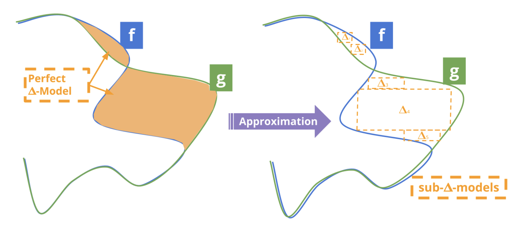
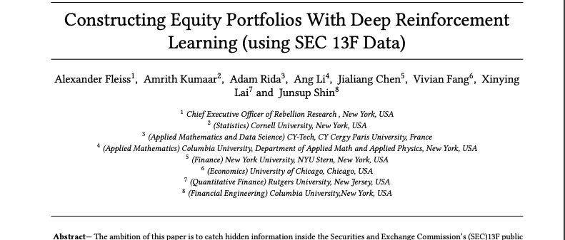
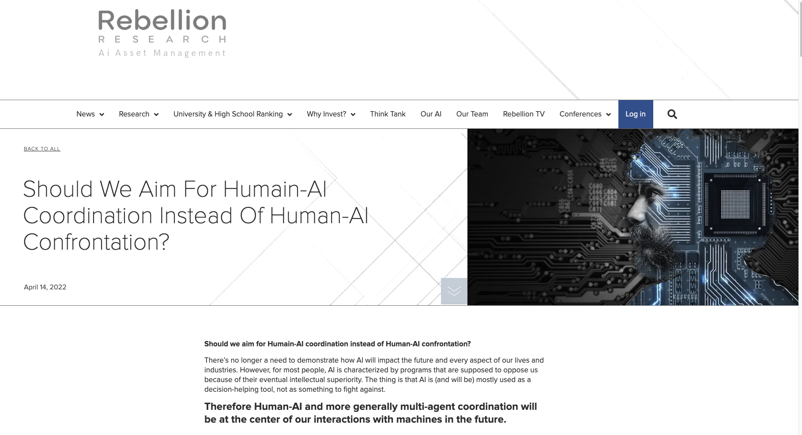
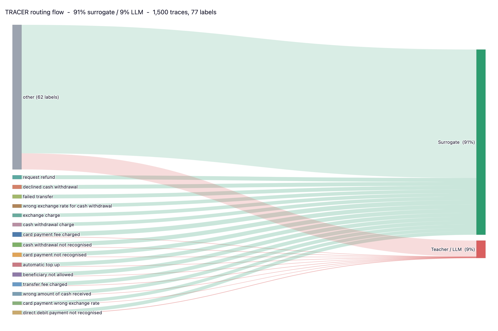
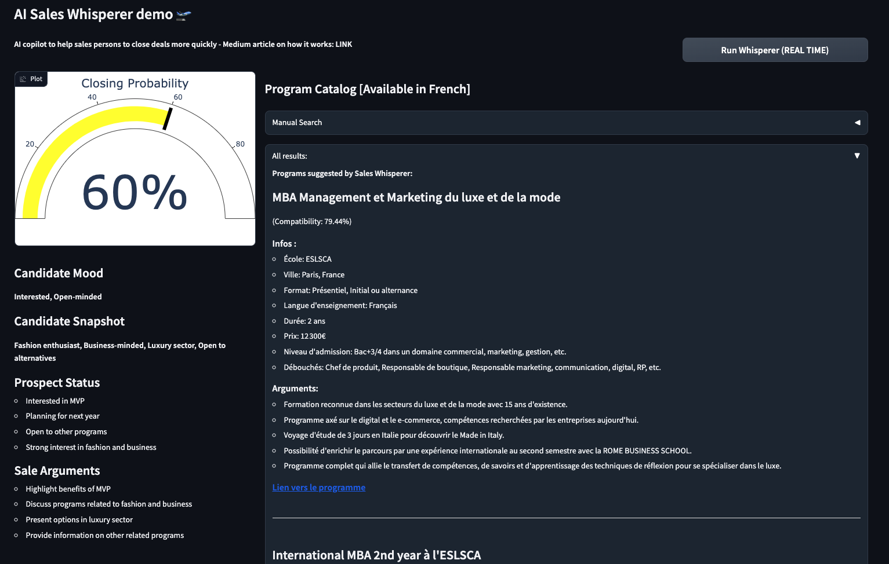

Adam Rida
AI Researcher and Founder
Founder at DeepRecall | ex PhD Candidate in ML at Sorbonne University and AXA | Master's in Applied Mathematics from CY Tech
adamrida.ra@gmail.com[download CV] [connect on linkedin]
I am an AI researcher and founder based between Paris and San Francisco, building systems that make AI more efficient, interpretable, and deployable at scale.
I currently lead DeepRecall, an AI-powered regulatory intelligence platform for marketplace enforcement, monitoring 120,000+ safety alerts across 8+ jurisdictions. I also created TRACER, an open-source system that replaces expensive LLM classification calls with lightweight ML surrogates (pip install tracer-llm).
Before founding DeepRecall, I was a PhD candidate at Sorbonne University within the Trustworthy and Responsible AI Lab (TRAIL), a joint lab between Sorbonne and AXA focused on trustworthy AI. My research on explainable AI and model dynamics produced the DeltaXplainer method for interpreting model differences over time, published at the DynXAI workshop of ECML-PKDD 2023.
I went through Entrepreneur First (LD22), where I co-founded a venture helping private equity deal teams screen investments faster using advanced RAG techniques (GraphRAG, Graph Neural Networks). I built three live prototypes showcased to 100+ PE funds within two months.
As Head of AI at Autoplay AI, I designed and built the company's AI inference and processing pipeline from scratch, analyzing user behavior signals (events, mouse activity, hesitation patterns) to detect cohorts struggling with product adoption.
Earlier, I held ML engineering and data science roles at Societe Generale, AXA, Qantev, and Rebellion Research, working on anomaly detection, portfolio optimization, claims automation, and complex systems modeling.
I hold a Master's in Applied Mathematics from CY Tech and completed the Ecole 42 coding program. Outside of work, I am passionate about aviation and working towards my Private Pilot License (PPL).
Areas of Interest:
- - LLM Cost Optimization, Routing, and Learning to Defer
- - Explainable AI (XAI), Concept Drift, and Model Dynamics
- - Regulatory AI, Compliance Automation
- - Outlier Detection and Unsupervised Learning
- - RAG, Document Parsing, Knowledge Representation
Publications and Blogs

TL;DR: The DeltaXplainer paper introduces a method to explain differences between machine learning models in an understandable way. It uses interpretable surrogates to identify where models disagree in predictions. While effective for simple changes, it has limits in capturing complex differences. The paper explores its methodology, limitations, and potential for improving understanding in model comparisons.
[arxiv] [github] [python package] [blog post]

[ssrn] [github]
[blog post]

[blog post]
Open Source Projects


[website] [github] [python package] [docs]

